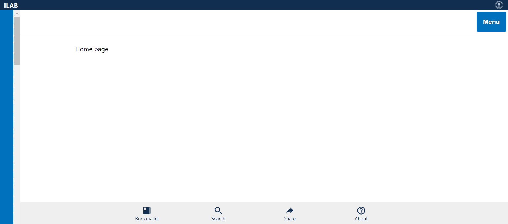
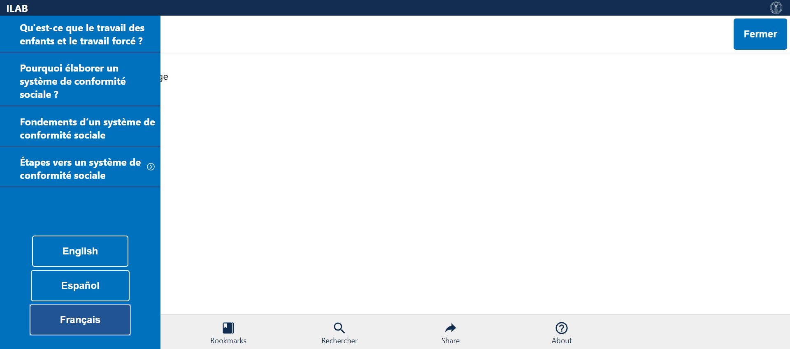

Tests
3 test(s) passed
0 test(s) failed, 0 others
Steps
42 step(s) passed
0 step(s) failed, 39 others
Tests
-
Verify Menu in English Mar 10, 2019 02:44:01 PM passMar 10, 2019 02:44:01 PM Mar 10, 2019 02:44:07 PM 0h 0m 5s+814msVerify Menu - Topics and Language Items in English
Status Timestamp Details check_circle 2:44:01 PM Comply Chain Logo is Displayed info_outline 2:44:02 PM 
check_circle 2:44:02 PM ILAB is displayed info_outline 2:44:02 PM check_circle 2:44:02 PM MENU is Displayed info_outline 2:44:02 PM check_circle 2:44:04 PM MENU is opened Successfully info_outline 2:44:04 PM 
check_circle 2:44:04 PM What are Child Labor and Forced Labor? link is displayed info_outline 2:44:04 PM check_circle 2:44:04 PM What are Child Labor and Forced Labor? link Verified info_outline 2:44:05 PM 
check_circle 2:44:05 PM Why Develop a Social Compliance System? link is displayed info_outline 2:44:05 PM check_circle 2:44:05 PM Why Develop a Social Compliance System? link Verified info_outline 2:44:05 PM check_circle 2:44:05 PM Basics of a Social Compliance System link is displayed info_outline 2:44:06 PM 
check_circle 2:44:06 PM Basics of a Social Compliance System link Verified info_outline 2:44:06 PM check_circle 2:44:06 PM Steps to a social compliance system is displayed info_outline 2:44:06 PM check_circle 2:44:06 PM Steps to a social compliance system Verified with Expandable Arrow Mark info_outline 2:44:07 PM  check_circle 2:44:07 PM MENU is closed Successfully info_outline 2:44:07 PM check_circle 2:44:07 PM MenuVerification_English Test Case PASSED -
Verify Menu in Español Mar 10, 2019 02:44:13 PM passMar 10, 2019 02:44:13 PM Mar 10, 2019 02:44:20 PM 0h 0m 6s+918msVerify Menu - Topics and Language Items in Español
Status Timestamp Details check_circle 2:44:13 PM Comply Chain Logo is Displayed info_outline 2:44:13 PM 
check_circle 2:44:13 PM ILAB is displayed info_outline 2:44:14 PM 
check_circle 2:44:14 PM Menú is Displayed info_outline 2:44:14 PM check_circle 2:44:16 PM Menú is opened Successfully info_outline 2:44:16 PM 
check_circle 2:44:16 PM ¿Qué son el trabajo infantil y el trabajo forzoso? link is displayed info_outline 2:44:17 PM 
check_circle 2:44:17 PM ¿Qué son el trabajo infantil y el trabajo forzoso? link Verified info_outline 2:44:17 PM check_circle 2:44:17 PM ¿Por qué crear un sistema de cumplimiento social? link is displayed info_outline 2:44:18 PM 
check_circle 2:44:18 PM ¿Por qué crear un sistema de cumplimiento social? link Verified info_outline 2:44:18 PM check_circle 2:44:18 PM Aspectos básicos de un sistema de cumplimiento social link is displayed info_outline 2:44:18 PM check_circle 2:44:18 PM Aspectos básicos de un sistema de cumplimiento social link Verified info_outline 2:44:19 PM 
check_circle 2:44:19 PM Pasos hacia un sistema de cumplimiento social is displayed info_outline 2:44:19 PM check_circle 2:44:19 PM Pasos hacia un sistema de cumplimiento social Verified info_outline 2:44:19 PM check_circle 2:44:19 PM Menú is closed Successfully info_outline 2:44:20 PM 
check_circle 2:44:20 PM MenuVerification_Español Test Case PASSED -
Verify Menu in Français Mar 10, 2019 02:44:25 PM passMar 10, 2019 02:44:25 PM Mar 10, 2019 02:44:32 PM 0h 0m 6s+881msVerify Menu - Topics and Language Items in Français
Status Timestamp Details check_circle 2:44:25 PM Comply Chain Logo is Displayed info_outline 2:44:26 PM 
check_circle 2:44:26 PM ILAB is displayed info_outline 2:44:26 PM check_circle 2:44:26 PM Menu is Displayed info_outline 2:44:26 PM check_circle 2:44:29 PM Menú is opened Successfully info_outline 2:44:29 PM 
check_circle 2:44:29 PM Qu'est-ce que le travail des enfants et le travail forcé ? link is displayed info_outline 2:44:29 PM check_circle 2:44:29 PM Qu'est-ce que le travail des enfants et le travail forcé ? link Verified info_outline 2:44:30 PM  check_circle 2:44:30 PM Pourquoi élaborer un système de conformité sociale ? link is displayed info_outline 2:44:30 PM check_circle 2:44:30 PM Pourquoi élaborer un système de conformité sociale ? link Verified info_outline 2:44:30 PM check_circle 2:44:30 PM Fondements d’un système de conformité sociale link is displayed info_outline 2:44:31 PM check_circle 2:44:31 PM Fondements d’un système de conformité sociale link Verified info_outline 2:44:31 PM check_circle 2:44:31 PM Étapes vers un système de conformité sociale is displayed info_outline 2:44:31 PM check_circle 2:44:31 PM Étapes vers un système de conformité sociale Verified info_outline 2:44:32 PM check_circle 2:44:32 PM Menu is closed Successfully info_outline 2:44:32 PM check_circle 2:44:32 PM MenuVerification_Français Test Case PASSED
info_outline
check_circle
cancel
cancel
error
warning
redo
clear
Dashboard
Tests
3
Steps
81
Start
Mar 10, 2019 02:43:55 PM
End
Mar 10, 2019 02:44:33 PM
Time Taken
0h 0m 37s+889ms
Environment
| Name | Value |
|---|---|
| Project Name | DOL COMPLY CHAIN |
| User Name | KAVITHA MALLIPEDDI |
| Automation Tool | SELENIUM/JAVA |
| Java Version | 1.8.0_191 |
| Operating System | WINDOWS 10 |
| Host Name | DESKTOP-I4MRD09 |
| IP Address | 192.168.200.4 |
| Environment | TEST |